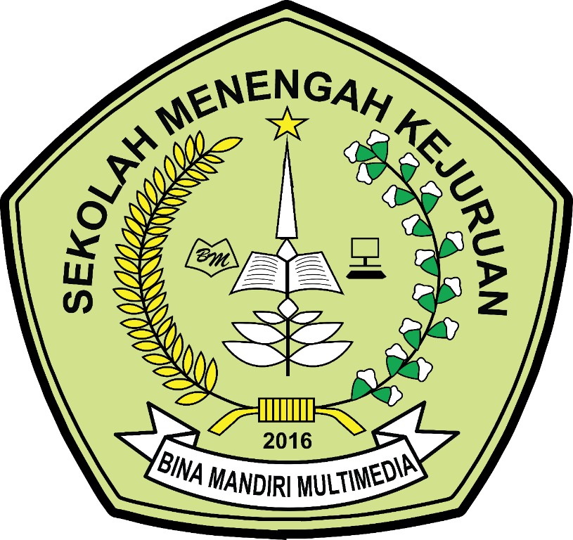

01

Website portofolio pribadi untuk memperkenalkan diri, menampilkan keahlian, dan mengumpulkan karya.
- PHP Native
- JavaScript
- CSS
Aku Annisa Nur Utami, siswi Rekayasa Perangkat Lunak yang senang mengulik antarmuka, menyusun struktur basis data, dan mewujudkan konsep segar menjadi karya web yang fungsional.

Siswi RPL · Web & UI/UX
Kenalin, aku Annisa Nur Utami — biasa dipanggil Runa.
Aku siswi Rekayasa Perangkat Lunak (RPL) di SMK BINA MANDIRI MULTIMEDIA yang senang belajar hal baru, mengeksplorasi dunia web, dan menuangkan ide kreatif menjadi karya. Selalu tertarik meracik desain unik serta mewujudkan konsep-konsep baru yang beda dari yang lain.
Kumpulan proyek website dan desain antarmuka yang pernah aku kerjakan.
Website portofolio pribadi untuk memperkenalkan diri, menampilkan keahlian, dan mengumpulkan karya.

Desain e-learning untuk tugas sekolah, dirancang di Figma dengan tampilan dashboard belajar yang informatif.

Website penerima tamu perpustakaan untuk mencatat dan mendata pengunjung yang masuk.

Website profil untuk UMKM bengkel mobil, memperkenalkan layanan perawatan dan perbaikan kendaraan.

Website pengelolaan keuangan, administrasi, dan layanan warga di tingkat RT/RW.

Website toko online untuk merchandise anime, mainan, dan barang koleksi, dengan katalog produk serta fitur pencarian dan keranjang.
Tiga bidang utama yang terus aku asah bersama perangkat yang sehari-hari kupakai.
Membangun website yang responsif dan fungsional.
Merancang antarmuka yang menarik dan mudah dipakai.
Menyusun basis data yang rapi dan terstruktur.
Perjalanan belajar di sekolah dan praktik kerja lapangan.

Rekayasa Perangkat Lunak (RPL) — belajar pengembangan perangkat lunak, desain web, dan mewujudkan ide kreatif.
Tempat PKL untuk mengenal lingkungan kerja profesional dan mengembangkan keterampilan di bidang digital.
Mari Terhubung
Kalau ingin berdiskusi soal proyek web, desain antarmuka, atau sekadar menyapa, silakan hubungi lewat email atau kanal di samping.